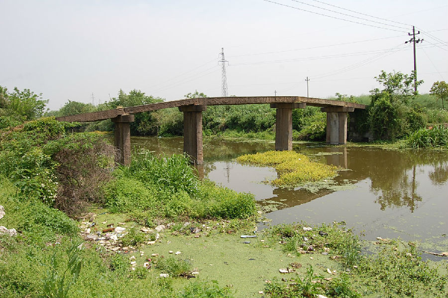

嘉兴市文物保护网 · 市级文物保护点 · 2020-11-09 · 原文

农建村塘河桥位于嘉兴市大桥镇农建村7组，始建年代不详，桥额旁亦看不清重建年份，民国《新丰镇志》卷二《桥梁》：“塘河桥，东堍感七下五庄，西堍感七上二庄。清嘉庆间里人周瑞春重建。”东西向跨塘河，为五孔无栏梁式石板桥。桥面由三块石板分三节平铺而成，共8个天盘石，南桥额有“孝悌忠信塘河桥”字样，并刻有卷草纹。南侧桥楹联自东向西分别为“南北川流千家多吉”、“□□□□□□□□”、“迎□进退逍遥浑道”和“东西日照万户爱□”。北侧桥额和楹联因化工厂污染已看不清。东、西两侧桥堍各有五级台阶。桥全长23.42米，中间桥面宽1.54米，桥梁距河面高2.63米。该桥现已极少通行。塘河桥历史悠久、造型稳重、保存较好，对研究古桥梁的建造和历史，有一定的参考价值。2009年公布为市级文保点。